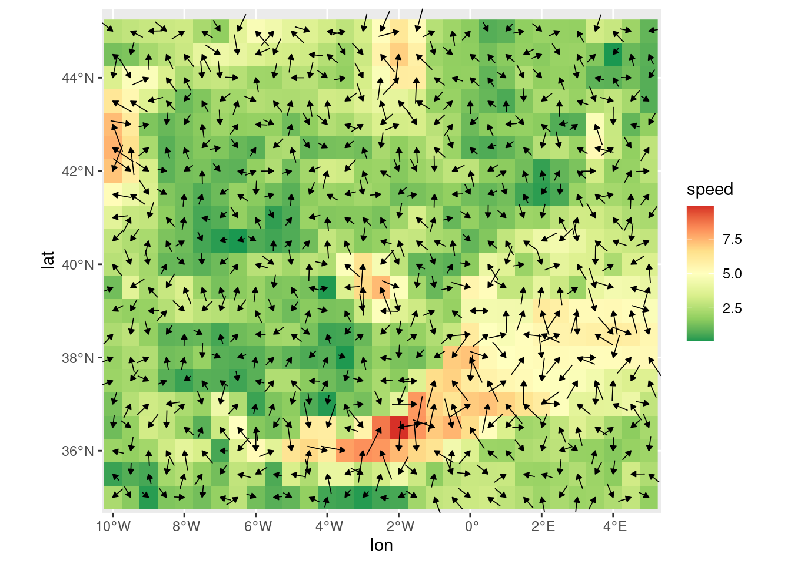
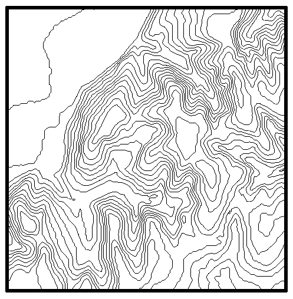
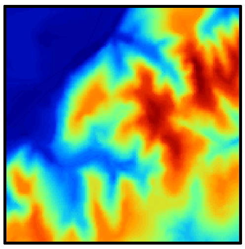
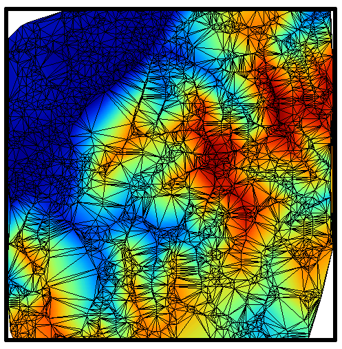
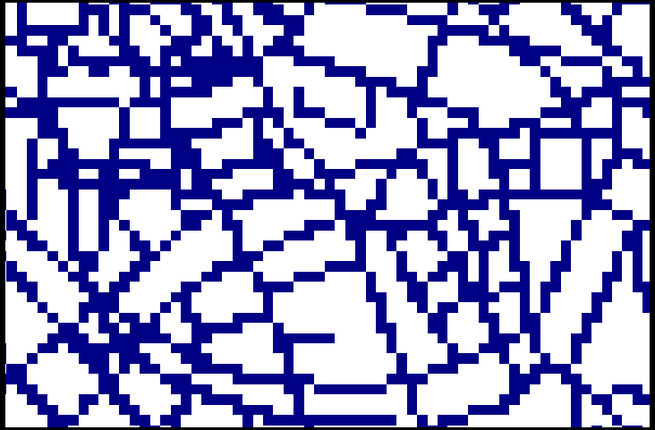
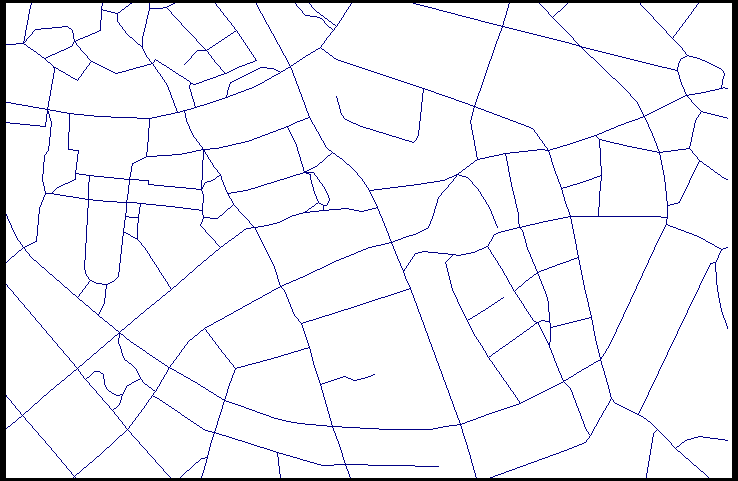

Esta primera parte nos introduciremos en conceptos básicos de manejo de datos espaciales. Veremos las ventajas y desventajas de los distintos modelos de datos. Además intentaremos definir el tipo de análisis espacial que nos será útil para el resto de los talleres.
1.1 Modelos de datos espaciales
Los modelos de datos espaciales son estructuras que nos permiten organizar la información espacial, sus atributos y propiedades en objetos específicos bajo una lógica predefinida. Existen varios modelos de datos espaciales, entre los cuales destacaremos a los vectores y los rasteres.
1.1.1 Modelos geográficos:
1.1.1.1 Campos
Entre los campos tenemos a los escalares y los vectoriales.
Los campos escalares son variaciones n-dimensionales representadas con un único valor por cada punto específico. Por ejemplo la temperatura, la elevación, la precipitación. Es decir variables cuya magnitud asignada a una ubicación depende de un solo valor (por lo general numérico) (Olaya 2020). Ejemplo: La cantidad promedio de lluvia en pulgadas para cada una de las 70 ciudades de Estados Unidos y Puerto Rico.
precip
Mobile Juneau Phoenix Little Rock
67.0 54.7 7.0 48.5
Los Angeles Sacramento San Francisco Denver
14.0 17.2 20.7 13.0
Hartford Wilmington Washington Jacksonville
43.4 40.2 38.9 54.5
Miami Atlanta Honolulu Boise
59.8 48.3 22.9 11.5
Chicago Peoria Indianapolis Des Moines
34.4 35.1 38.7 30.8
Wichita Louisville New Orleans Portland
30.6 43.1 56.8 40.8
Baltimore Boston Detroit Sault Ste. Marie
41.8 42.5 31.0 31.7
Duluth Minneapolis/St Paul Jackson Kansas City
30.2 25.9 49.2 37.0
St Louis Great Falls Omaha Reno
35.9 15.0 30.2 7.2
Concord Atlantic City Albuquerque Albany
36.2 45.5 7.8 33.4
Buffalo New York Charlotte Raleigh
36.1 40.2 42.7 42.5
Bismark Cincinnati Cleveland Columbus
16.2 39.0 35.0 37.0
Oklahoma City Portland Philadelphia Pittsburg
31.4 37.6 39.9 36.2
Providence Columbia Sioux Falls Memphis
42.8 46.4 24.7 49.1
Nashville Dallas El Paso Houston
46.0 35.9 7.8 48.2
Salt Lake City Burlington Norfolk Richmond
15.2 32.5 44.7 42.6
Seattle Tacoma Spokane Charleston Milwaukee
38.8 17.4 40.8 29.1
Cheyenne San Juan
14.6 59.2
Por su par, te los campos vectoriales tienen un espacio multidimensional para ser representados. Es decir, son variables de fenómenos que requieren por lo menos dos valores para ser correctamente representados. Por ejemplo el viento depende de la dirección y su fuerza.
library(ggplot2)data(wind.data, package ="rWind")ggplot(wind.data, aes(x = lon , y = lat, fill = speed, angle = dir, radius = scales::rescale(speed, c(.2, .8)))) +geom_raster() +geom_spoke(arrow =arrow(length =unit(.05, 'inches'), ends ="first", type ="closed"),size =0.3) +scale_fill_distiller(palette ="RdYlGn") +coord_sf(crs =4326, expand =0)

1.1.1.2 Entidades discretas
El modelo de entidades discretas no asocia a cada punto geográfico un valor, sino que concibe un entorno geográfico como un espacio vacío sobre el que se sitúan distintos elementos (entidades) que lo van rellenando Olaya (2020).
Las variables de tipo nominal y alfanumérico —las cuales no son continuas— tales como el tipo de suelo en un punto o la cobertura vegetal al que pertenece dicho punto, son buenos ejemplos de modelo de entidades discretas.
1.1.2 Modelos de representación
En SIG hay distintas maneras de representar la misma variable para su análisis. Veamos en el siguiente ejemplo 4 formas para representar la información altitudinal (Figura 1.1).

(a) Vector: Curvas de nivel

(b) Raster: Pixeles

(c) Red de triángulos
(d) Malla de puntos
Figura 1.1: Distintas formas de representar una capa con información altitudinal (Olaya 2020)
Los dos primeros modelos de representación son los más conocidos y serán los que exploraremos en este curso.
1.1.2.1 Modelo vector
Se trata de uns representación discreta de las entidades. La particularidad de este modelo es que usa formas definidas para abstraer el fenómeno espacial. Entre estas formas están: los puntos, las líneas y los polígonos. Es útil para variables que son discretas en el espacio. Por ejemplo: vías, ríos, casas, etc
1.1.2.2 Modelo Raster
Este es un modelo en el cual se utiliza una discretización regular del espacio, que comunmente se conoce como pixeles. Es más útil para abstraer fenómenos continuos en el espacio. Por ejemplo temperatura del suelo, precipitación, topografía, etc.
Comparación entre raster y vector
En ocasiones una entidad discreta también puede usarse con el modelo raster. Lo cual para fines prácticos es útil, pero para representación cartográfica quizá no lo es (por ejemplo las vías). Y en otras ocasiones, se requiere lo contrario (por ejemplo, representar la topografía con entidades discretas.). Veamos una comparación de una entidad discreta representada con ambos modelos (Figura 1.2):

(a) Raster

(b) Vector
Figura 1.2: Raster vs. Vector. Comparando ambos modelos (Olaya 2020).
1.2 Por qué usamos R para esta clase?
R es un lenguaje de programación de código abierto, que nos permite implementar y resolver muchos problemas de cálculo. Pero además, nos permite desarrollar la lógica para resolver problemas cálculo en hidrología. De manera complementaria, estaremos aprendiendo una nueva forma de hacer reportes a partir de los análisis de R. Esto último se conoce como programación literal y consiste en combinar texto literal en lenguaje para humanos y código de programación en bloques. Para saber más sobre programación literal le recomiendo ver Knuth (1984).
1.3 Recomendación para usar R en Windows:
Se recomienda actualizar R y Rstudio a la versión más reciente. Si ya tiene pre-instalado R, puede usar el paquete “installr” para actualizar semi-automáticamente. Para usar este paquete se reuiere ejecutar desde R commander
Usaremos como referencia el libro de Geocomputation with R de Lovelace, Nowosad, y Muenchow (2019), específicamente todos los capítulos de Foundations. Pueden leer el libro en linea en https://geocompr.robinlovelace.net/.
1.4.1 Explorando vectores
Necesitaremos el paquete sf y spData. Si no los tiene instalados, puede instalarlos en este momento.
Exploraremos dos ficheros shapefile que vienen en la instalación por defecto. El primero es world.shp que es parte del paquete spData. El segundo es rivers que también es parte de spData.
¿Qué tipo de modelo de representación es?
¿Cuántos atributos tiene cada capa?
¿Cuál es el sistema de coordenadas de referencia (CRS)?
¿Qué tipo de modelos geográficos contienen esas capas?
¿Cuál es la extensión de cada uno?
1.4.2 Explorando rasters
Ahora necesitaremos los paquetes terra y spData. Si no los tiene instalados, puede instalarlos en este momento.
Exploraremos dos ficheros GeoTiff que vienen en la instalación por defecto de spData. Los ficheros son elev.tif y grain.tif.
¿Qué tipo de modelo de representación es?
¿Cuántas variables tiene cada capa?
¿Cuál es el sistema de coordenadas de referencia (CRS)?
¿Qué tipo de modelos geográficos contienen esas capas?